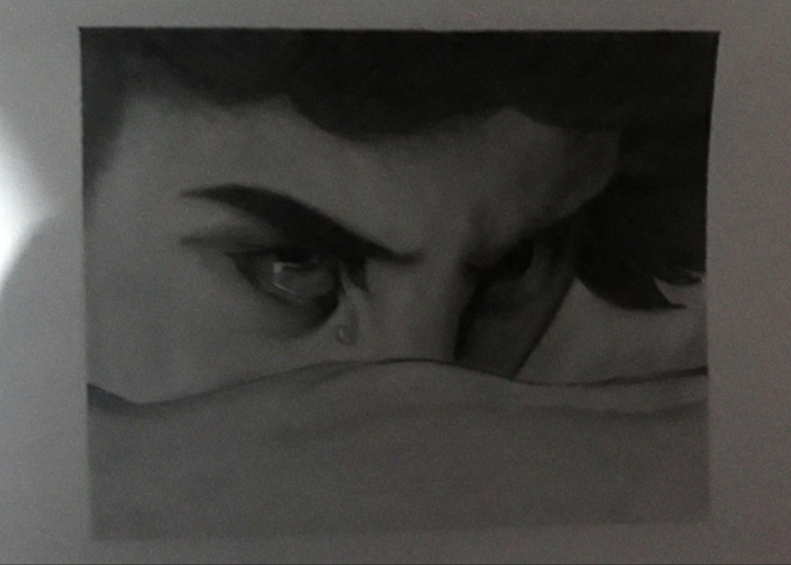
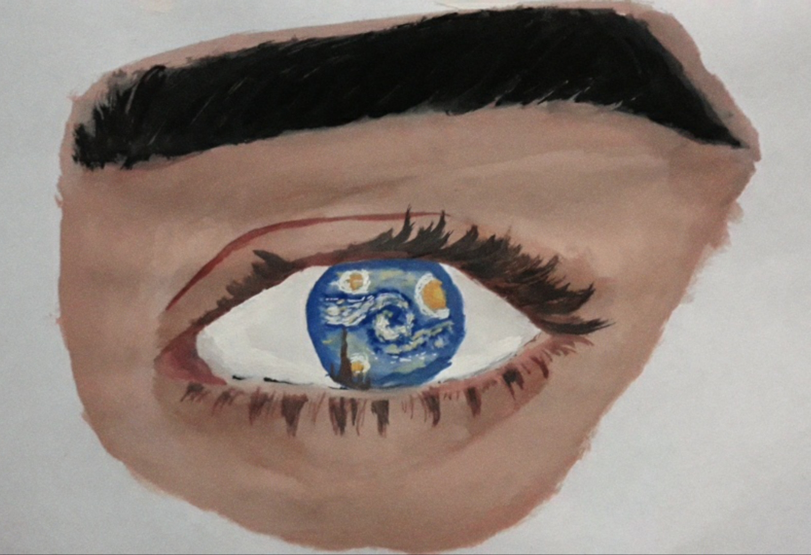
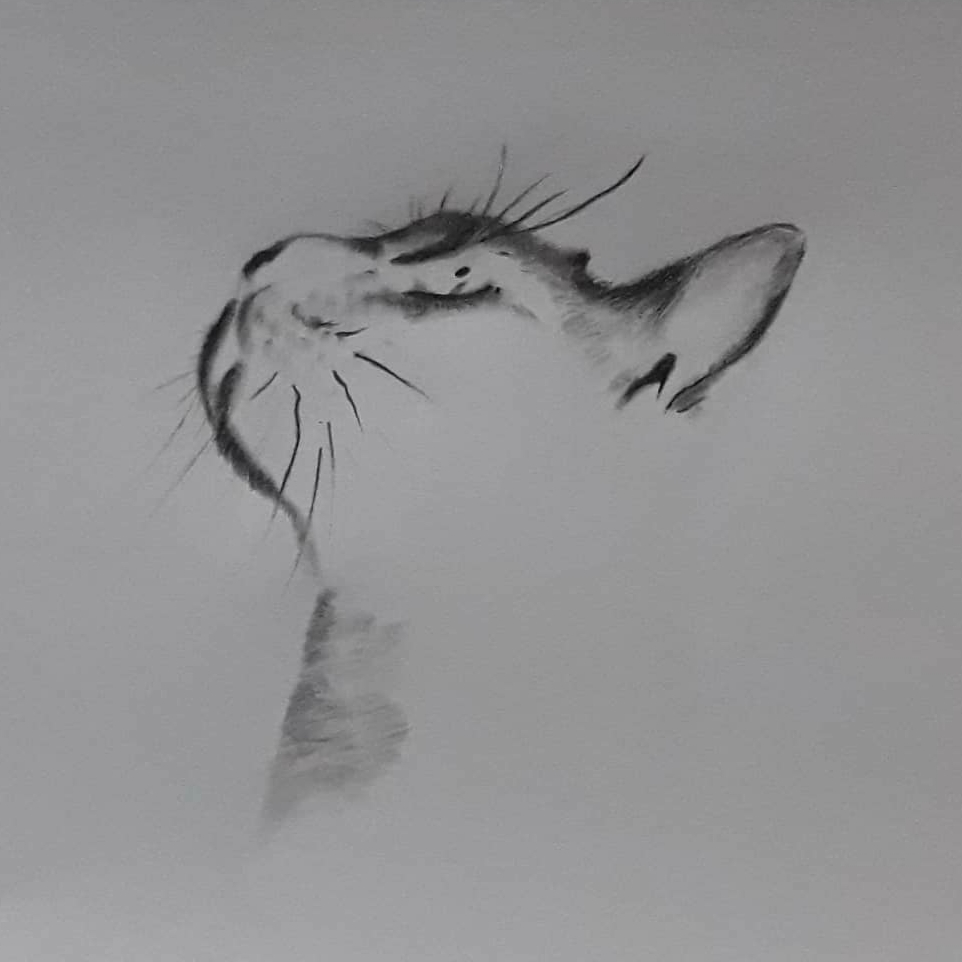
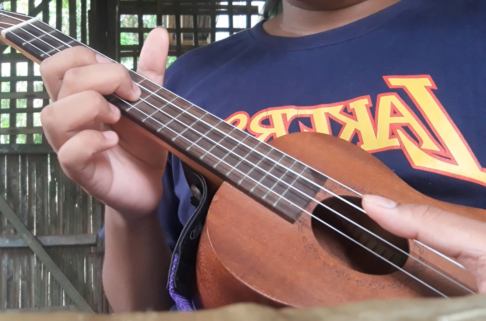
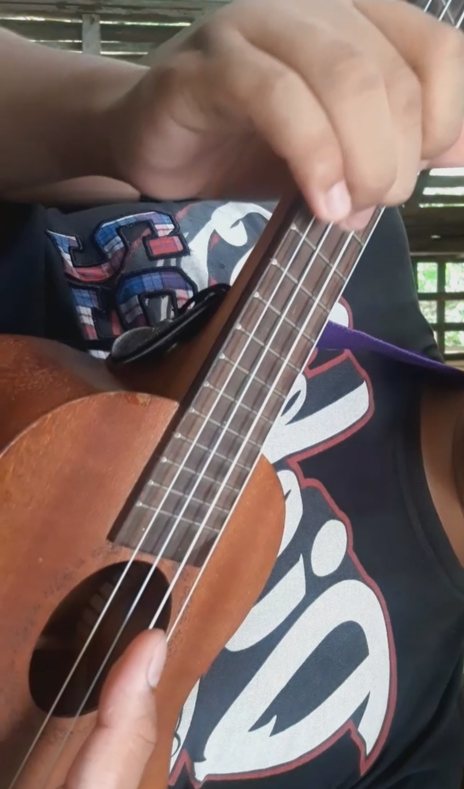
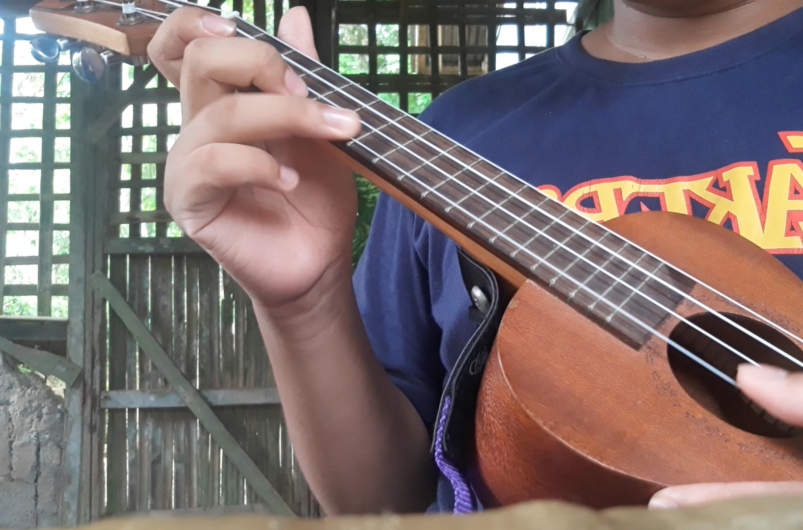
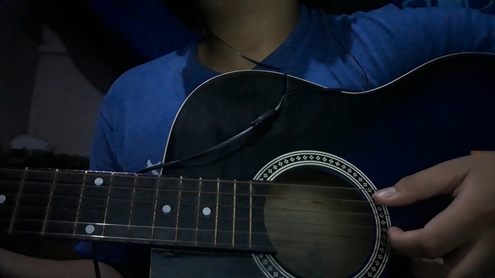
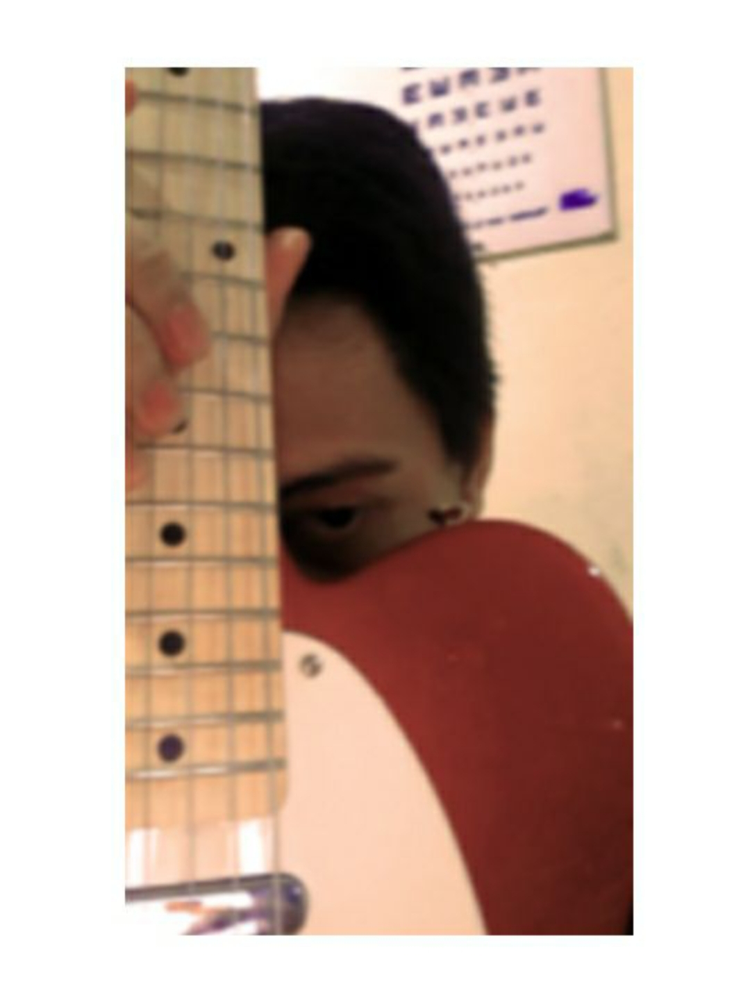

Art
Traditional Graphite pencil and Postercolor paint
  Drawing is one of my favorite hobby but is also the hardest to do. Not only it takes time to finish but also the time it consumes for a project can last up until 3 to 5 days. Practicing drawing is also the hardest part, it can take years and years to be better in this field. Finishing an artwork was such a relief and when people appreciates it, it is almost heartfelt and wholesome for me.
Music Ukulele
Suprano Ukulele
  I bought this Ukulele during the summer of 2019 at quiapo market. I learned to play it by myself and I used to play ukulele everyday since i bought it. It is easy to play because it is small, but mine's too small for my hands, but I'm used to play with it still. I love playing ukulele to kill some time and as a hobby because it's light weight compare to a guitar, and it's convinient to bring into our class to play and sing with my classmates and friends during out lunchbreak.
Music Guitar
Acoustic guitar and Electric guitar
 Playing guitar is my favorite hobby because I love playing music when I'm alone and also to sing at the same time. Acoustic guitar was the second instrument that I have learned and to play because the first instrument that I used to play was a keyboard, but I totally forgot how to play it since I used to play it when I was just a kid in choir. I love playing guitar because I can play the songs that I love. Also I can play guitar even with small breaks like 10 minutes break or shorter, unlike drawing that can took a lot of time. I don't usually show my face when I'm recording a video becuase I'm too shy for my performance, but when I'm with my mini-band called "Maenggoy Band" that me and my friends made, I gain a confidence that I don't really know I have. This band was formed by me and my friends; Jade our Lead vocalist, Jamieson our Lead guitarist, Me the Rhythm guitarist, and our Lead model Maeng. Maeng doesn't do anything aside being pretty and being the highlight the band, just kidding haha. I miss this band that me and my friends made, sadly they already left this City so we're not be able to continue to play songs. But that's still a good Jam, good friendship, and the best memories we have formed that will remain as my best hobby that I had. well played.
That's all :)